Kardiyovasküler hastalıkların ve patolojilerin varlığı hakkında kendinizi bilgilendirin
Nabzı, basıncı ölçün, bir elektrokardiyogram oluşturun.
Doktorsuz ön teşhis
Preinfarkt koşullarının erken tespiti.
Basit ölçümler: LED ekran ve TV ekranında ayrıntılı bilgiler Basit ölçümler: LED ekran ve telefon ekranı hakkında ayrıntılı bilgiler
Dikkat! Kardiyovasküler hastalıklar tehlikelidir!
Dünya çapında 1 numaralı ölüm nedeni
Ömrü 15 yıldan 20 yıla kısaltın
Yaygın engellilik nedeni
Düşük yaşam kalitesi.
Azalan görme ve körlük.
Doktorlar diyor ki:
Vakaların% 90'ında kalp ve kan damarlarının durumu kontrol edilerek kardiyovasküler hastalıklar önlenebilir. Ancak bu, kliniklere sık sık ziyaret gerektirir.
3'ü 1 arada akıllı tonometre, evde kalp ve kan damarlarının en önemli parametrelerini ölçmenizi sağlar.
Size sadece "kuru sayıları" göstermekle kalmayacak, aynı zamanda deneyimli bir doktor olarak kardiyovasküler sisteminizin durumunu da değerlendirecektir. Withings BPM Core ile kan damarları ve kalp hakkında her şeyi bileceksiniz.
Withings BPM Core, kalp ve kan damarlarının parametrelerini tam otomatik bir modda ölçer; Tek yapmanız gereken bileziği takmak ve güç düğmesine basmak. Akıllı tonometre kafı pompalar ve gerekli parametreleri kardiyovasküler sistemden kaldırır.
Withings BPM Core ile hangi veriler ölçülür ?
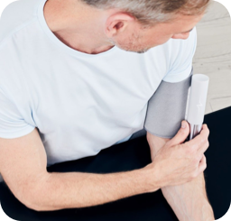 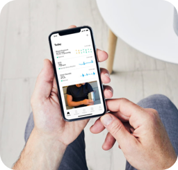
Hastalık Listesi, sen keşfetmek için izin erken bir aşamada Withings BPM Çekirdek
Hipertansiyon
Atriyal fibrilasyon
Kalp kapak hastalığı (kalp kusurları)
Kalp kasının iltihaplanması.
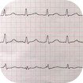
Atriyal fibrilasyon
Miyokardiyal enfarktüs
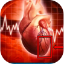
Kalbin hipertrofisi
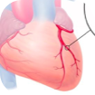
Angina pektoris
taşikardi
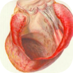
anevrizma kalpleri
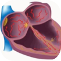
ekstrasistol
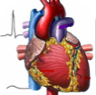
bradikardi
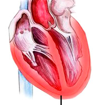
Perikardit ve miyokardit
Ven patolojisi
Ve bircok digerleri
Doktorlar diyor ki:
Patolojilerin birkaç kez erken tespiti, tam iyileşme şansını artırır. Özellikle Withings BPM Core yaşlılar için tavsiye edilir.
Withings BPM Core ile hangi veriler ölçülür?
Tansiyon
Withings BPM Core Sistolik ve diyastolik kan basıncını hızlı, kolay ve doğru bir şekilde belirler.
Withings BPM Core, tüm ölçümleri hafızada saklar, bu sayede kan basıncınızın gün, aylar ve hatta yıllar boyunca nasıl değiştiğini görebilirsiniz.
Önemli olduğu için mi?
4 kişiden 3'ünde yaşla birlikte tansiyon yükselmektedir. Hipertansiyon, kalp krizi ve felçlerin önde gelen nedenidir. Ölüme neden olabilir.
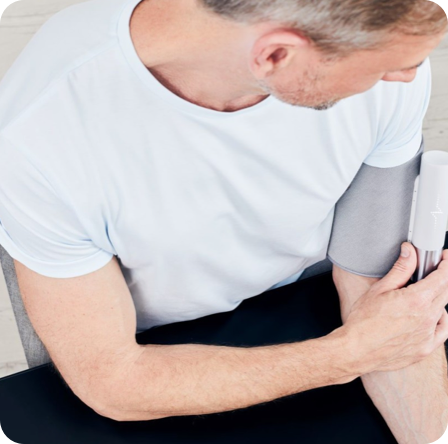
Nabız ve kalp atış hızı
Withings BPM Core, ultra hassas ses sensörü ve dijital stetoskop işlevi ile donatılmıştır. Kalp kapakçıklarının açılıp kapanmasının özelliği olan ses frekanslarını tespit etmenizi sağlar. Sonuç olarak, çok çeşitli kalp kapak hastalıklarının erken teşhisini sağlar.
Önemli olduğu için mi?
Kalp kapak hastalığı (kalp kusurları) yaygın kardiyovasküler hastalıklardır. Kalp yetmezliğine yol açabilir ve acil ameliyat gerektirir. Bu patolojinin erken tespiti, tedavinin etkinliğini 5 ila 7 kat artırır.
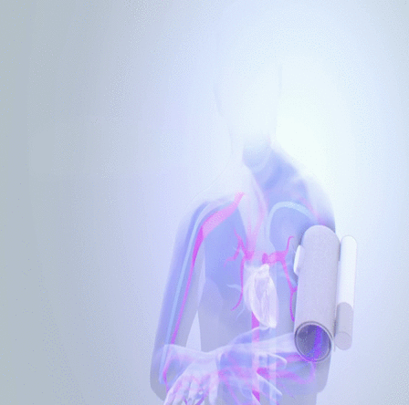
Elektrokardiyogram (EKG)
Withings BPM Core - evde EKG oluşturabilen tek tonometre ! 3 sensör elektrotlu Withings BPM Core, tıbbi ekipmanla aynı ölçüm doğruluğuna sahiptir. EKG'yi cep telefonunuzun ekranında göreceksiniz.
Önemli olduğu için mi?
30 yaşın üzerindeki her 4 kişiden 1'inde ileride birçok kardiyovasküler hastalığın ortaya çıkmasına neden olan atriyal fibrilasyon gelişir. EKG, patolojik değişiklikleri zamanında teşhis etmenize ve uygun tedaviyi gerçekleştirmenize izin verir.
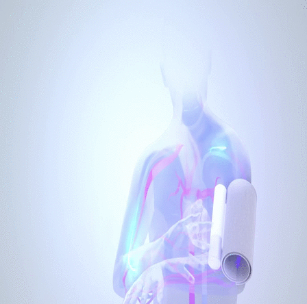
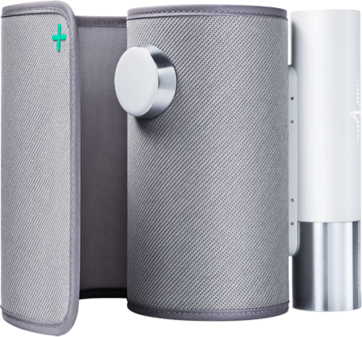
Withings BPM Core , kalbiniz ve kan damarlarınız hakkında her şeyi bilmenizi sağlar
Withings BPM Core, herhangi bir iOS veya Android akıllı telefona yüklenebilen özel Health Mate yazılımıyla birlikte gelir.
Withings BPM Core, verileri Wi-Fi veya Bluetooth aracılığıyla programa otomatik olarak aktarır. Programda sadece son ölçümlerin sonuçlarını değil, aynı zamanda Withings BPM Core kullanım süresinin tamamının okumalarını da göreceksiniz.
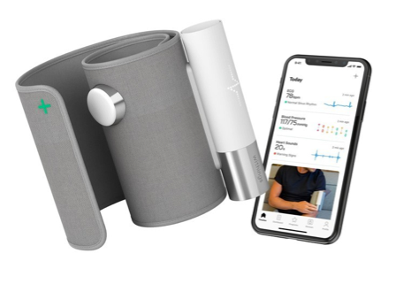
Withings BPM Core, 8 kişiye kadar veri kaydedebilir
Bu 3'ü 1 arada akıllı tansiyon ölçüm cihazını tüm aile için kullanabilirsiniz. Ek olarak, Health Mate programında, tespit ettiğiniz sapmaları dikkate alarak kardiyovasküler sistemi iyileştirmek için öneriler göreceksiniz.
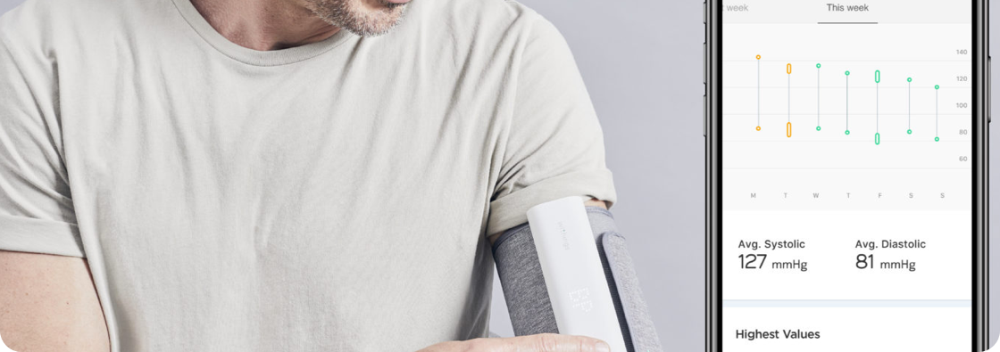
Withings BPM Core, önde gelen Avrupalı kardiyologları tavsiye ediyor
Withings BPM Core, Paris Kardiyoloji Enstitüsü tarafından oluşturulan mükemmel bir 3'ü 1 arada evde kan basıncı ölçüm cihazıdır. Bu cihaz sadece kan basıncını ölçmekle kalmaz, aynı zamanda bir elektrokardiyogramın yapımı da dahil olmak üzere kalp ve kan damarlarının durumunun diğer gerekli parametrelerini ortadan kaldırabilir.
Withings BPM Core'un önemli bir avantajı, ölçüm geçmişini kaydedebilmeniz ve patolojinin zaman içindeki gelişimini gösterebilmenizdir. Bu, doktorunuzun size daha doğru bir teşhis koymasına ve sizin için en uygun tedaviyi yazmasına olanak sağlayacaktır.
Sağlığınıza önem veriyorsanız ve tehlikeli hastalıkları daha başlangıç aşamasında önlemek istiyorsanız, 3'ü 1 arada akıllı tansiyon monitörü kullanmanızı tavsiye ederim.Şüphesiz bugün sınıfının en iyi cihazıdır.
M. Travin, kardiyolog
birinci sınıf doktor, profesör
Başka neden kullanmaya değer? Withings BPM Core?
Wi-Fi veya Bluetooth ile otomatik kablosuz bağlantı
Özel bir uygulama olan "Health Mate" içinde profesyonel verilerin analizi
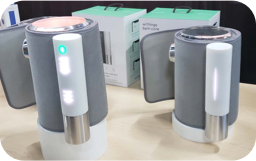
Fransa'da tasarlandı, WHO tarafından önerildi
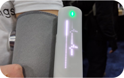
Otomatik manşet şişirme
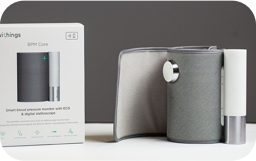
Kardiyovasküler sistemin gerekli tüm parametrelerini ölçen çok işlevli cihaz
Çok sayıda klinik denemeden geçmiştir, Amerikan ve Avrupa standartlarını karşılamaktadır.
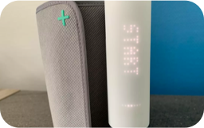
Dahili bir şarj edilebilir pil ile çalışır, 6 aya kadar tek bir şarjla otonom çalışma
Musteri degerlendirmeleri
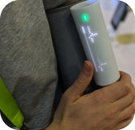
«Un tonómetro, como un termómetro, debería estar en todas las familias. Elegí durante mucho tiempo. Decidí quedarme con Withings BPM Core. No me arrepiento. El tonómetro es excelente. Parece elegante, cómodo y ligero. Puedes sentir la asamblea europea en todo. Tiene una función de bombeo automático, construye un ECG por sí mismo, elimina el trabajo de las válvulas cardíacas, mide, de hecho, la presión en sí. También me gustó que no es necesario comprar pilas. Compacto. En general, un excelente tonómetro con funcionalidad avanzada. Aconsejo sinceramente. La compra en sí está 100% satisfecha»
Svetlana, 31 años, Nizhny Novgorod
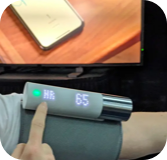
"Mükemmel tonometre. Neredeyse 6 yıldır hipertansiyonum var. Bu süre zarfında birkaç tansiyon monitörü vardı. Withings BPM Core en çok sevdiğim oydu. Böyle bir tonometrenin düşük fiyatına rağmen, sadece kan basıncını ölçmekle kalmaz, aynı zamanda bir EKG de alabilir. Çok rahat çalışır, kablo yoktur, kendi kendine hava pompalar. Tüm veriler telefonda görüntülenebilir. Ek olarak, program tedavi önerileri sunar. Tonometre yüksek kalitede üretilmiştir. Avrupalı üretici hemen görülebilir. Genel olarak, bu miktar para için süper bir seçenek. Herkese tavsiye ederim! "
Marina, 47 yaşındayım, Barselona
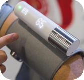
“Un amigo me recomendó el tonómetro inteligente 3 en 1. Lo ha estado usando durante varios meses. Lo elogió mucho. Mi viejo se rompió, así que decidí pedir este. El tonómetro es realmente genial. Realiza 3 medidas importantes. Construye un electrocardiograma. Esta es la primera vez que veo un tonómetro de este tipo. Fui al médico, le traje los datos del ECG y todo lo demás (están registrados en la memoria del dispositivo y en el programa). El médico dijo que era una información muy valiosa. Puede prescribir un tratamiento con mayor precisión. El dispositivo en sí es de alta calidad, liviano y fácil de operar. Alimentado por una batería incorporada, se carga como un teléfono normal. Estoy completamente satisfecho con el tonómetro "
Stanislav Ivanovich, 59 años, Moscú
«Un tonómetro, como un termómetro, debería estar en todas las familias. Elegí durante mucho tiempo. Decidí quedarme con Withings BPM Core. No me arrepiento. El tonómetro es excelente. Parece elegante, cómodo y ligero. Puedes sentir la asamblea europea en todo. Tiene una función de bombeo automático, construye un ECG por sí mismo, elimina el trabajo de las válvulas cardíacas, mide, de hecho, la presión en sí. También me gustó que no es necesario comprar pilas. Compacto. En general, un excelente tonómetro con funcionalidad avanzada. Aconsejo sinceramente. La compra en sí está 100% satisfecha»
Svetlana, 31 años, Nizhny Novgorod
"Mükemmel tonometre. Neredeyse 6 yıldır hipertansiyonum var. Bu süre zarfında birkaç tansiyon monitörü vardı. Withings BPM Core en çok sevdiğim oydu. Böyle bir tonometrenin düşük fiyatına rağmen, sadece kan basıncını ölçmekle kalmaz, aynı zamanda bir EKG de alabilir. Çok rahat çalışır, kablo yoktur, kendi kendine hava pompalar. Tüm veriler telefonda görüntülenebilir. Ek olarak, program tedavi önerileri sunar. Tonometre yüksek kalitede üretilmiştir. Avrupalı üretici hemen görülebilir. Genel olarak, bu miktar para için süper bir seçenek. Herkese tavsiye ederim! "
Marina, 47 yaşındayım, Barselona
gözlük
Tek tip: 3'ü 1 arada akıllı tonometre
Maker: Withings
Ölçümler: kan basıncı, elektrokardiyogram, dijital stetoskop